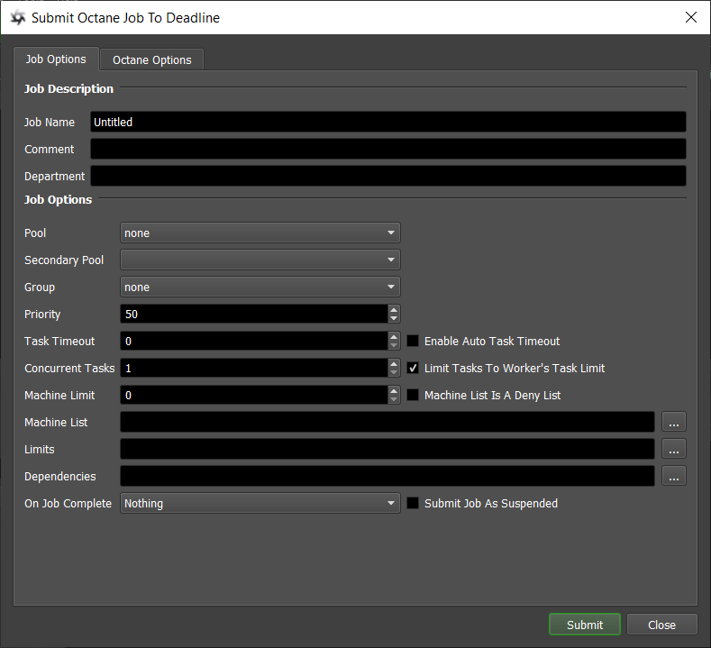
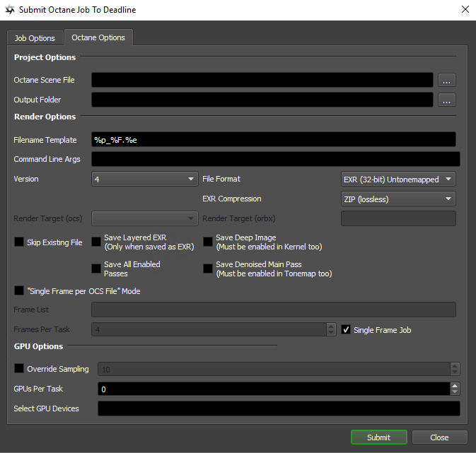
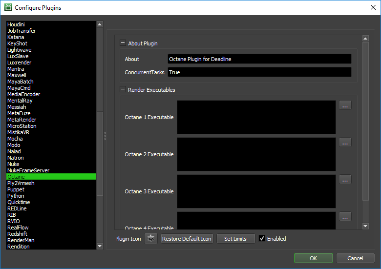

Octane Standalone¶
Job Submission¶
You can submit Octane Standalone jobs from the Monitor.
 Submission Options¶
The general Deadline options are explained in the Job Submission documentation, and the Draft/Integration options are explained in the Draft and Integration documentation.
The Octane specific options are:
Octane Scene File: Specify the Octane scene file(s) to render. If you have an animation with one OCS file per frame, you just need to select one of the OCS files from the sequence.
Output File: Override the output path in the scene. This is optional, and can be left blank.
Command Line Args: Additional command line arguments to pass to the renderer.
Version: Which version of Octane to use.
EXR Compression: Select the type of compression to use when saving as an EXR. If blank, then no compression will be performed.
Render Target (ocs): Select the target to render. This list is automatically populated based on the selected OCS file.
Render Target (orbx): The target to render (ORBX files only). Leaving this field blank will render all targets.
Skip Existing File: If a file exists already, do not overwrite it.
Save Layered EXR: Combines the passes into a single EXR.
Save Deep Image: Saves an additional image with a front and back Z-depth. More information can be found on Octane’s official documentation.
Save All Enabled Passes: Saves all enabled passes. If “Save layered EXR” is marked then all the passes will be combined into an EXR, otherwise each pass will be saved into a different file.
Save Denoised Main Pass: Denoises the output file. If “save all enabled passes” is enabled then this mode is disabled.
Single Frame Job: This should be checked if you’re submitting a single Octane file only, as opposed to separate files per frame.
Frame List: The list of frames to render.
Override Sampling: Enable to override the Sampling setting in the scene file.
GPUs Per Task: The number of GPUs to use per task. If set to 0, the default number of GPUs will be used, unless ‘Select GPU Devices’ Id’s have been defined.
Select GPU Devices: A comma separated list of the GPU devices to use specified by device Id. ‘GPUs Per Task’ will be ignored.
Single Frame per OCS File: Use the settings within the OCS file to render a single frame. This is to be used with Octane before version 1.6.
Plugin Configuration¶
You can configure the Octane plugin settings from the Monitor. While in power user mode, select Tools -> Configure Plugins and select the Octane plugin from the list on the left.
Render Executables
Octane Executable: The path to the Octane executable file used for rendering. Enter alternative paths on separate lines.
FAQ¶
Currently, there are no FAQs for this plugin.
Error Messages and Meanings¶
This is a collection of known Octane error messages and their meanings, as well as possible solutions. We want to keep this list as up to date as possible, so if you run into an error message that isn’t listed here, please contact Deadline Support and let us know.
Currently, no error messages have been reported for this plugin.

{kind=link}
{kind=link}
{kind=link}